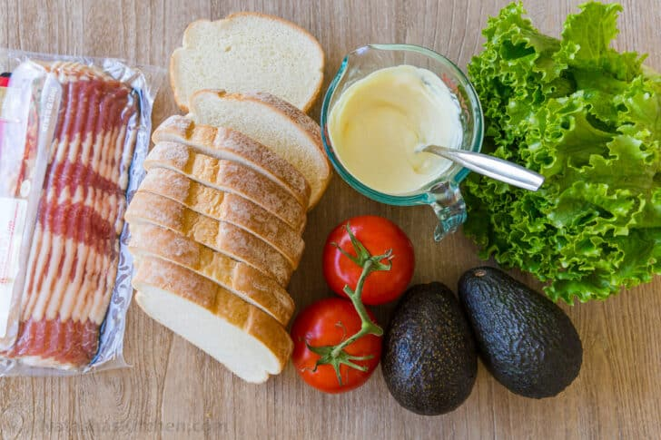

Coca-Cola Chicken Wings
Origin: China Source: Family Recipe Category: Main Dish
I learnt how to cook Coca-Cola chicken wings from my mother, and I've since tweaked her recipe to better suit my family's palate, making it less sweet. While the cooking process remains straightforward, the result is incredibly flavorful, and once you've tried it, you'll understand its delicious appeal!
Recipe Ingredients
- Chicken wings
- Scallions
- Ginger slices
- Cooking wine
- Dark soy sauce
- A can of coke
Recipe Steps
- Wash and place chicken wings in a bowl
- Add scallions, ginger slices, cooking wine, dark soy sauce and salt to the washed chicken wings, and mix them well
- Cover the bowl with plastic wrap and marinate the chicken wings for 1 hour
- Put the right amount of oil in the pot, and put the marinated chicken wings into the pot and fry it until golden brown on both sides
- After fry the chicken wings until golden brown on both sides, then pour a can of coke into the pan and bring to a boil
- Continue to cook for an additional 2-3 minutes until the glaze has thickened and coats the wings nicely
- Transfer the Coca-Cola glazed chicken wings to a serving platter
Additional Food images


Guacamole
Origin: Mexican Source: Family Recipe Category: Appetizer
Guacamole is a Mexican dip made from mashed avocados, tomatoes, onions, cilantro, lime juice, and chili pepper, creating a creamy, zesty, and versatile condiment often enjoyed with tortilla chips, tacos, and more.
- Avocado
- Lime
- Salt
- Onion
- Tomato
- Cilantro
Recipe Steps
- Slice three ripe avocados in half
- Scoop them into a mixing bowl
- Use a fork to gently mash them
- Add the onions, tomatoes, cilantro, jalapeno pepper, garlic, lime juice and salt and stir everything together.
Additional Food images


BLAT Sandwich
Origin: American Source: Family Recipe Category: Main Dish
A BLAT sandwich is a delicious twist on the classic BLT, featuring crispy bacon, fresh lettuce, ripe tomatoes, and creamy avocado, all sandwiched between slices of bread for a satisfying blend of flavors and textures.
- Bacon
- Lettuce
- Avocado
- Tomato
- Bread
- Mayo
Recipe Steps
- Toasted bread slice spread with mayo
- Put sliced avocado, bacons, sliced tomatoes, lettuce on one spread of bread
- Put the other slice of bread at the top
Additional Food images
